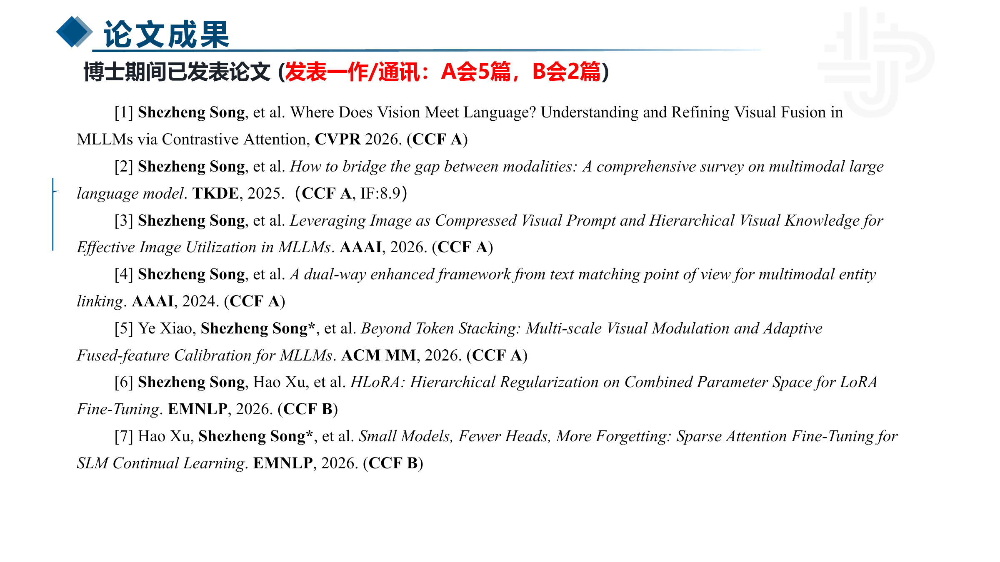
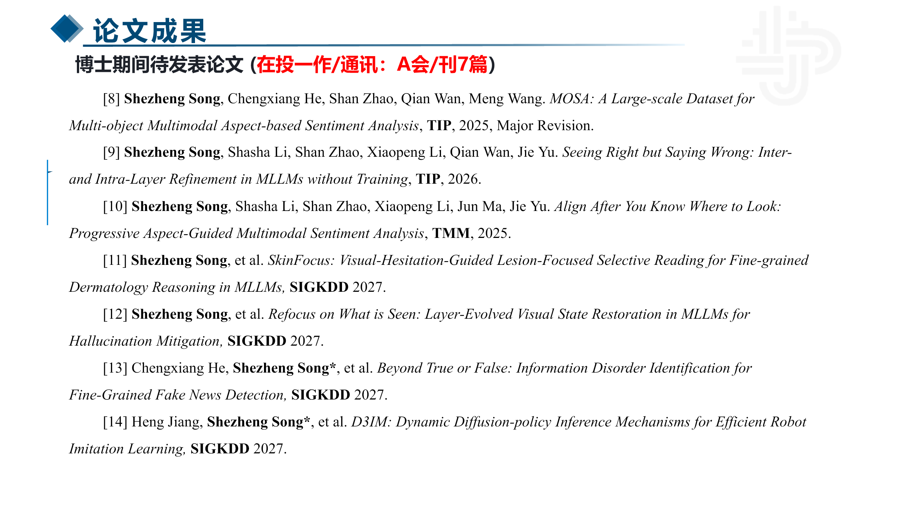
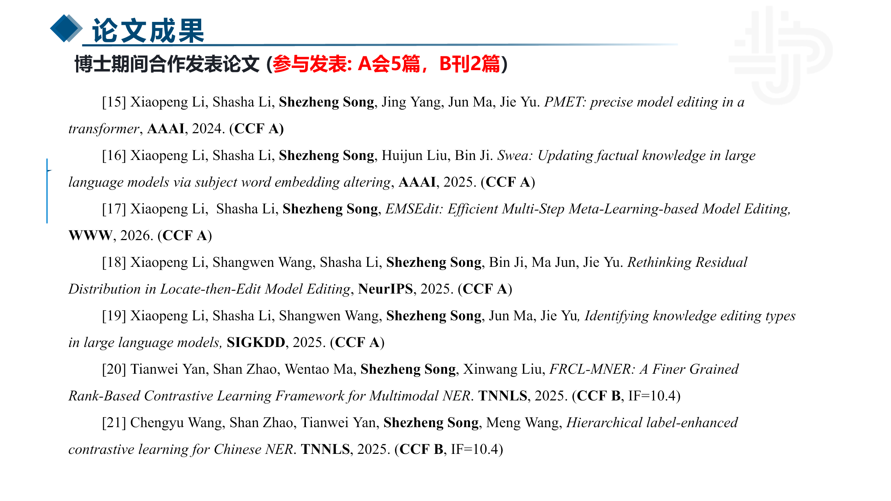
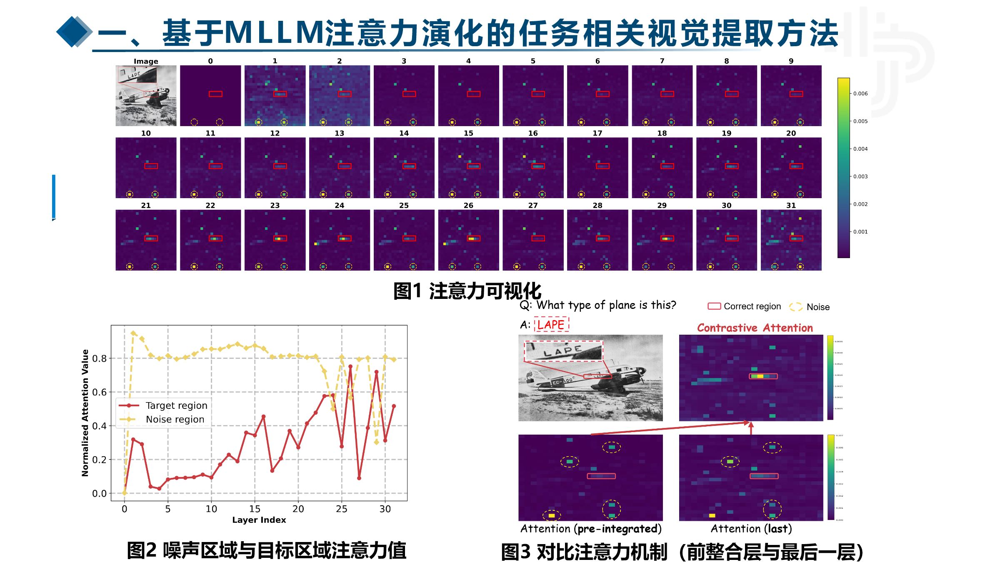
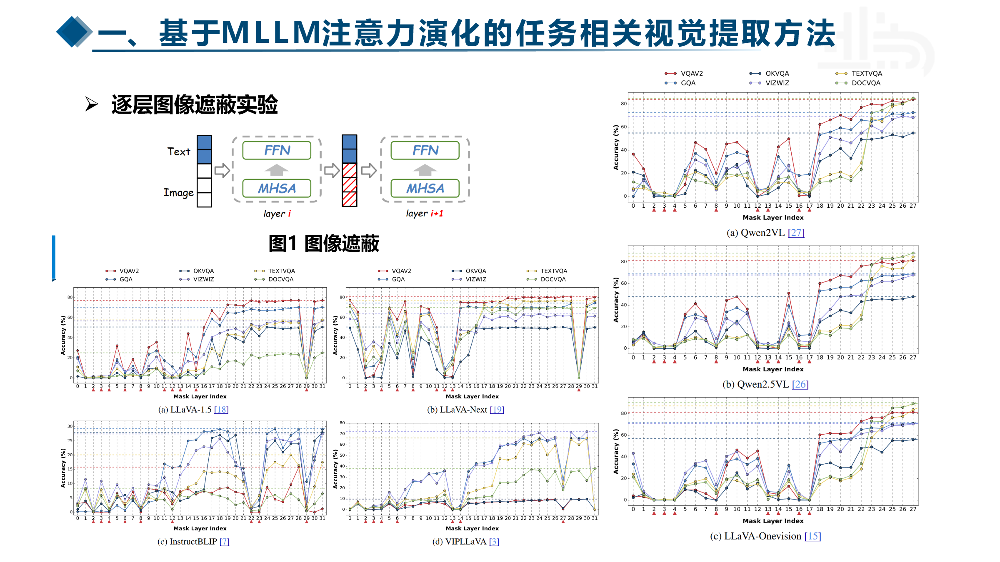
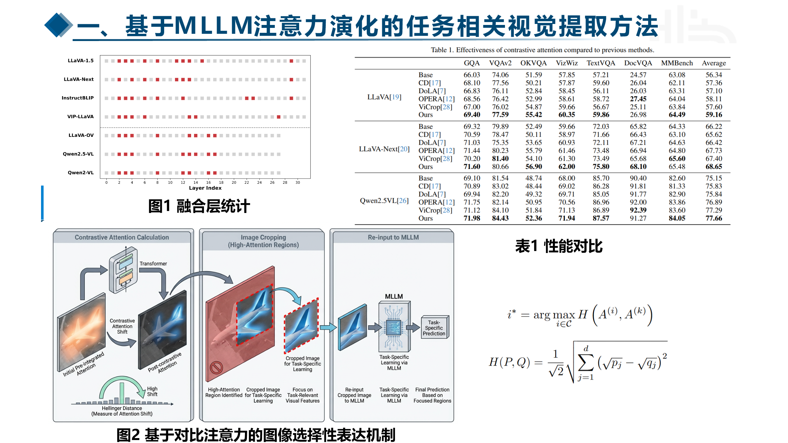
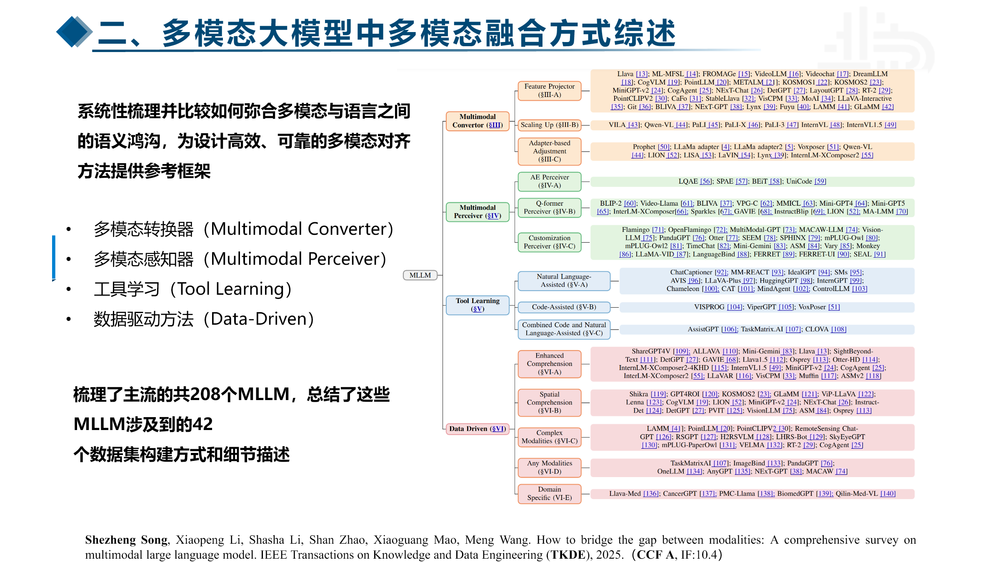

TENCENT INTERNSHIP REVIEW
腾讯实习转正答辩
汇报人：宋社政
TENCENT INTERNSHIP REVIEW
汇报人：宋社政
2026.09
研究方向聚焦多模态大语言模型、多模态实体链接与持续学习，关注多模态信息如何被理解、对齐和有效利用。
具备模型研究、数据构建和系统落地的完整训练。
负责网页多模态数据质量分级与批量标注闭环。
覆盖综述、视觉融合、实体链接与合作研究。
能够从问题定义、模型验证走到大规模数据生产。
中英文比例 49.51 : 50.48，接近 1 : 1
不同档位数据差异明显，自动分档结果可接受。
全量分布分析发现 text_complement = 2 是中档的主要区分因素；进一步复盘后，在 Prompt 中增加 OCR 类型标签。
汇总多人标注结果，提供 Overall 一致率和逐维度 Fleiss' κ，帮助团队定位分歧维度。
交付：标注分析交互页面高 / 中 / 低各抽取 500 条，共 1500 条，搭建页面支持快速翻查与标准复盘。
抽检结果：13 / 15 正确按三类 Case 标注页面簇：删除合理、误删优质、存在更优图片；与同事各标 10 簇对齐标准。
目标：评估 Interleave 删除策略运行 Doubao 与 H20(Qwen3.6) 评分；记录 Kimi 解析成功率问题，为方案选型提供依据。
产出：多模型结果对比使用 SQL 统计五维分布，制作交互页面并给出高 / 中 / 低阈值和比例建议。
发现：Text Complement 区分度最高完成 5000 条试跑、双分区串行调度，修复任务结束误判，并协调 512 卡按时产数。
保障：生产任务稳定交付围绕 MCPUniverse 数据集开展高质量 Agent 轨迹构建与蒸馏，并完成模型训练、评测与发布。
这段经历沉淀了数据构建、蒸馏训练与效果评测能力。进入腾讯后，我把同一套“数据 → 模型 → 评测 → 迭代”方法迁移到网页多模态数据质量分级任务中。






